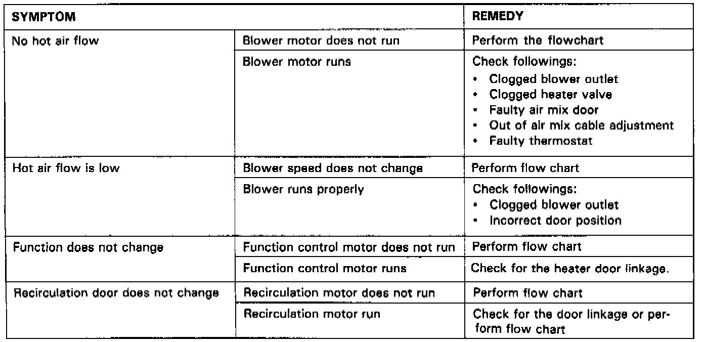

Diagnosis By Symptom - Manual Heating and Air Conditioning - Coupe

Heater Symptom Troubleshooting Chart
A/C system, Cooling Fan System and Fan Timer System Troubleshooting
1. With A/C and blower switches on, A/C clutch and fans do not operate:
- SEE FLOW CHART "A".
2. With A/C and blower switches on, A/C clutch operates but both fans do not:
- PERFORM RADIATOR FAN CONTROL UNIT INPUT TEST. Testing and Inspection
3. With A/C and blower switches on, fans operate but A/C clutch does not engage:
- SEE FLOW CHART "C".
4. With A/C and blower switches on, fan does not operate at the correct speed:
- PERFORM RADIATOR FAN CONTROL UNIT INPUT TEST. Testing and Inspection
5. With A/C and blower switches on, A/C clutch engages but only one fan runs:
- PERFORM RADIATOR FAN CONTROL UNIT INPUT TEST. Testing and Inspection
6. With A/C and blower switches off, cooling fans do not come on even with high coolant temperature:
- PERFORM RADIATOR FAN CONTROL UNIT INPUT TEST. Testing and Inspection
7. When engine is turned off and oil temperature is above 220°F the condenser fan does not come on:
- PERFORM FAN TIMER INPUT TEST. Testing and Inspection